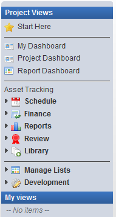

The TACTIC sidebar is the main menu system for navigating through the views in the TACTIC Project. The access rules applied to a specific account determine the contents of the sidebar as well as which views are displayed when a user is logged in.
The items in the sidebar provide links to existing views within a project. These views are built by your organization's production manager based on a selection of columns (properties), layouts (order and column width) and a search. If a search view is available, it provides a dynamic report based on the definition of the search.
The sidebar is divided into three different categories, "Project Views", "My Views" and "Admin Views".
|
 |
The Project Views provides a way to save project wide views that everyone across the entire project would want to see. It also has a manageable list of custom user views. The Project Views can be defined by the person in the role of the project manager. Views can also be hidden from specific user groups. My View contains a list of links to views that were created by the login user themselves. These usually are created by the user to cater to their own personal work flow. |
Admin Views displays the project schema and the TACTIC system and administration schemas. Access to the Admin Views section of the sidebar is generally reserved for admin level users.
My Admin - My Admin holds views that will allow the users to manage My Views and My Preferences.

|
Manage My Views |
Edits the views saved in the "My Views" section. |
|
My Preference |
Preferences include: Debug, Web Client Logging Level, Color Palette, Language, Quick Text for Note Sheet Thumbnail Size |